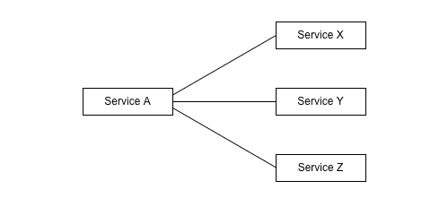
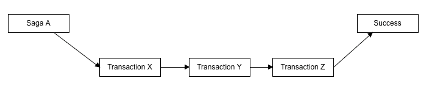
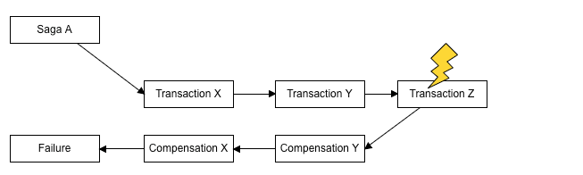
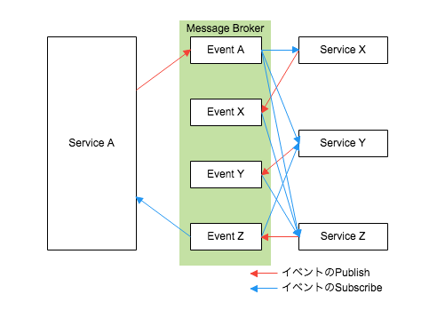
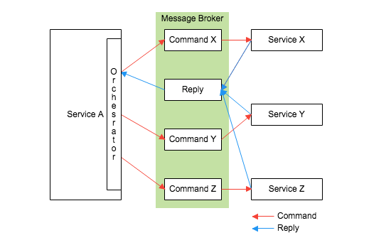

Sagaパターン¶
概要¶
マイクロサービスでは、移行する際にシステム移行に伴うDBの分解が発生した場合に、不具合となる危険性がある為、分散トランザクションは推奨されていない。
そのため、マイクロサービスで複数のリソースの結果整合性を利用する方法として、Sagaパターンがある。
Sagaパターンの説明¶
Sagaパターンとは、複数のサービスにまたがるビジネストランザクションをSagaとして実装する。Sagaは一連のローカルトランザクションのこと。リソースを長時間ロックすることがないよう設計されたアーキテクチャパターンである。
エラーが発生した場合、単純なロールバックはできず、代わりに一連のトランザクションで実行した操作の逆向きにした取り消し操作としての別のトランザクションによって元の状態に戻す。これを補償トランザクション（Compensation Transaction）という。
下記を例とした場合、
すべてのローカルトランザクションが成功すると、Saga Aも成功する。
Transaction Zが失敗した場合、
補償トランザクション（Compensation Transaction）をすでにコミット済みのTransaction Y、Transaction Xに対して実行した上で、Saga Aとしては失敗となる。
疑問：補償トランザクションの中でエラーが発生した場合などはどのように考慮されるのか？
Sagaパターンの種類¶
Sagaの実現方法として2つの方法がある。
Choreography（振り付け）
Orchestration（オーケストレーション）
Choreography
Choreography では、各ローカルトランザクション（Service X、Y、Z）は、自身のサービスが呼び出されたタイミング（または処理完了したタイミング？）で、 他のローカルトランザクションのトリガーとなるイベントを発行する。（イベントチェインのようなもの？） 各ローカルトランザクションは自身の発行するイベントおよび自身のトリガーとなるイベントに対してが責務の範囲となる。
Orchestration
Orchestration では、Service Aで生成したオーケストレーターが、実行するローカルトランザクションコマンドを各サービス（Service X、Y、Z）に一斉に通知し、それぞれの結果を集めてOrchestratorにReplyする。
長所・短所¶
Choreography
自身のトリガーとなるイベントに対しての責務が大きく、複数のサービスが循環参照するようなケースだとイベントの扱いが非常に難しくなるが、シンプルなSagaの場合は十分に有効な方法である。
メリット
一元的な制御モジュールが不要。 責任が各サービスに分散されるため単一障害点がない。
デメリット
各サービスがどのイベントを待ち受けているかの追跡が難しく、新しいサービスを追加する際に実装が煩雑になりがち。 各サービスが他のサービスのイベントを意識する必要があるためオーケストレーションと比較し密結合になる
Orchestration
関係するサービスのインターフェースについて管理する必要がある。各サービス間で互いのイベントを気にする必要がなく、処理としてはとてもシンプルになる。Sagaがオーケストレーターに閉じるため、Saga外部のことを気にする必要がなくなる。ただし、Saga間の独立性については考慮が必要。
メリット
各サービスが待ち受けているイベントの追跡が容易で、新しいサービスを追加しやすい。 各サービスはコーディネータからのイベントのみを意識するため、各サービスはコレオグラフィと比較して疎結合になる。
デメリット
コーディネータの追加実装が必要。 コーディネータの障害という単一障害点の発生。